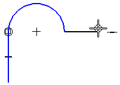
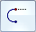
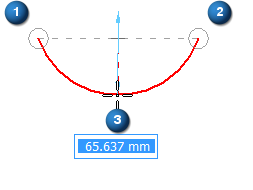
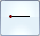

Draw connected lines and arcs

-
Choose the Line command .
-
The Line command starts in line mode by default. Do one of the following:
-
To start by drawing a line, click where you want the line to begin.
-
To start by drawing an arc, on the command bar, set the Type to Arc (a)

, and then click where you want the arc to begin.
-
-
Click where you want the line or arc to end.
-
If you are drawing an arc, click a third point to define the radius of the arc.

After you draw an arc, the command automatically switches back to line mode.
Tip:You can use a combination of graphic and edit box input. Instead of clicking a location, you can type a value in the edit box, as shown in the preceding image.
-
Continue drawing lines or arcs, using the following options to switch between line mode and arc mode:
To
Do this
Draw an arc.
Click or press the A key.
Draw a line.
Click

or press the L key. -
Right-click to finish.
-
When drawing an arc, you can use intent zones to specify whether you want to draw a tangent or perpendicular arc.
-
To see examples of the relationship indicators that appear as you draw or sketch, see the help topic, Relationships page (IntelliSketch dialog box).
-
If you close the shape, the tangent relationship is not applied at the closure point. You can use the Tangent command to apply a tangent relationship.
-
You can make the first line or arc tangent or perpendicular to an element. First, move the cursor to the element to which you want to be tangent. When IntelliSketch recognizes a Point On Element , click. Then use the intent zones to indicate if you want the line to be tangent or perpendicular.
How do I
Draw a lineExample: Connect points while drawing a line
Learn more
Drawing 2D elementsLook up more details
Line commandLine and Arc command bar